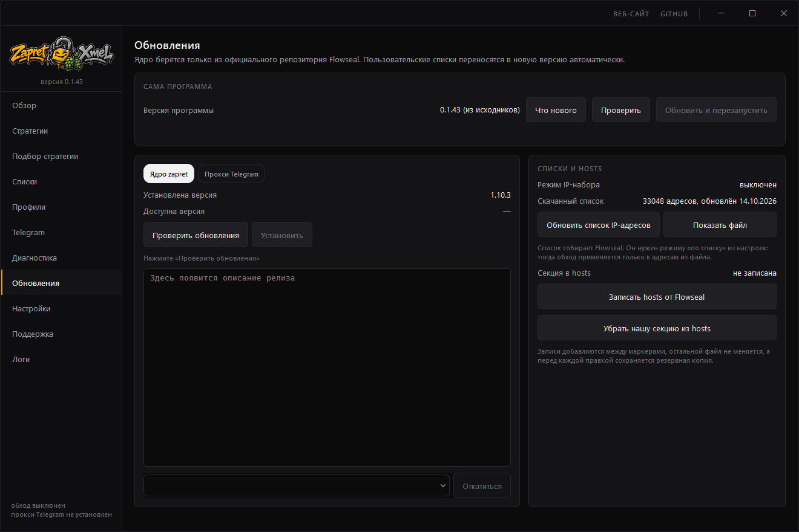

ZapretXmel
Графическая оболочка для Windows над утилитой zapret, на Python и PyQt6. Ставит и обновляет компоненты, подбирает конфигурацию перебором с замером и показывает, на каком уровне рвётся соединение.
- Версия
- 0.1.57
- Звёзды на GitHub
- 9
- Стек
- Python, PyQt6
